グラフとは？
グラフは、数字だけではわかりづらい情報を直観的に表示することができる。多くの場合、わたしたちは、数字や文章を理解しようとするよりも、グラフからイメージを直感しようとするものである。
ビジネス文書で使うグラフには、数学的な厳密さは必要ない。伝えたいと思うことをわかりやすく表示していればよい。いくらかの誇張が含まれていても問題はない（ただし、数値を改竄したり、明らかに誤ったグラフを書いてはいけない）。
ここでは、グラフを作成するときの注意点について学ぶ。
面積を利用する
図形の視覚的な特徴は、図形の数学的な特徴と、必ずしも一致しない。これは、例えば、錯視（目の錯覚）と呼ばれる現象である。
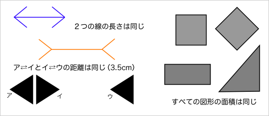
ビジネス文書で使うグラフには、数学的な厳密さは必要ないので、人間の視覚の性質を大いに利用してよい。
目的にあったグラフを選ぶ
データを比較するときには、目的（何を強調したいか）にあったグラフを選ぶようにする。図を見ればわかるように、同じ比率でも棒グラフ、面積グラフ、体積グラフでは印象が異なる。
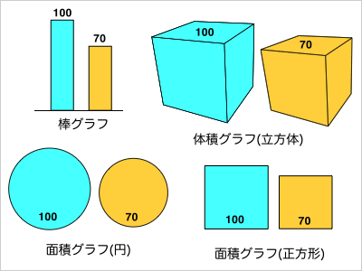
差がある（差が大きい）ことを強調したいのならば、棒グラフが効果的である。一方、差がない（差が小さい）ことを強調したいのならば、（円形の）面積グラフが効果的である。
円グラフを歪める
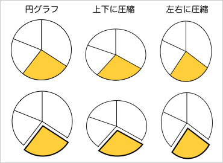
円グラフは、扇形の面積（中心角）で割合を表示するものである。一般的には、円で表示するものだが、グラフを変形する（楕円形にする）ことで印象を操作することができる（ただし、あまり極端な変形は避けた方がよい）。
円グラフを３Ｄ（立体的）にすることも同じ効果がある（３Ｄにすると必然的に楕円形になるため）。たとえば、下の３つのグラフはそれぞれ同じ割合を示しているが、傾ける角度によって印象は相当に異なる。
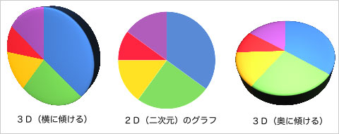
なお、円グラフを歪めたときには、意図的に誤解させようとしたと批判される可能性があるので、できるだけデータを数字で表示しておくべきである。
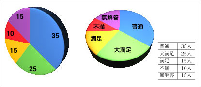
円グラフとドーナツグラフ
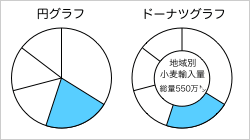
一般に、わたしたちは面積の差よりも、長さ（距離）の差の方が知覚しやすい。このことを利用して、円グラフをドーナツグラフにすることで、差を比較しやすくすることができる。円グラフでは、扇形の面積を比較することになるが、ドーナツグラフでは弧の長さが比較の対象となるからである。一方、差を明示的に示したくないときには、ドーナツグラフでなく円グラフを使った方がよい。
色彩を併用する
複数の色を並べたとき、対象をより大きく見せる色と、より小さく見せる色とがある。背景と明るさの差が大きいものほど大きく・手前に見え、背景と明るさの差の少ないものは小さく・奥に見えるものである。
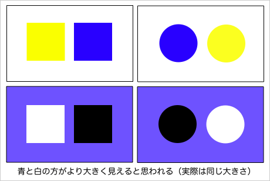
この性質をグラフに応用すれば、差をより大きく感じさせたり、より小さく感じさせたりすることができる。
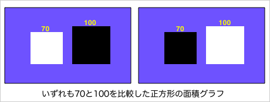
ただし、色覚による立体視には個人差も大きいので注意する必要がある（ある人にはより大きく見えるものが、他の人にはより小さく見えるかもしれない）。
ピクトグラフを活用する
直線などの単純な図形ではなく、ピクトグラム pictogram （絵文字）やイラストを用いて数値を表示したグラフをピクトグラフ pictograph （絵グラフ）という。
ピクトグラフの利点は、デザイン性を高めることで、数学的な厳密さを犠牲にできるところにある。
面積を大きくする
ピクトグラフによる誇張に、全体を大きくするという方法がある。
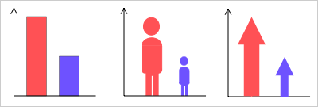
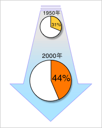
上の３つのグラフでは、それぞれ長さ（基底線からの高さ）が量の大きさを表わしているが、ピクトグラフ（右側２つ）では、高さに応じて絵の横幅を変化させることで、差を誇張している。
右のグラフは、時代の変化を表わすイラストと組み合わせることで、円グラフの大きさを変え、実際よりも大きな変化があるように誇張したものである。
また、下のグラフは、ピクトグラム（絵文字）を用いて棒グラフをピクトグラフに書き換えたものである。中央のグラフは、下に行くほど面積の小さいイラストを使うことで、右のグラフでは、図形を縮小して面積の差を大きくしている。
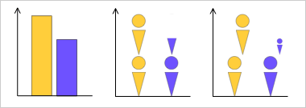
差を色で表わす
データの大きさの差を色の濃さ（明度）で表わしたグラフを、濃淡グラフという。
濃淡グラフは、厳密な差の比較には適していないが、地図などと組み合わせて使う場合がある（濃淡による地図グラフ）。濃淡グラフは、差をはっきりさせたくないときに適している。
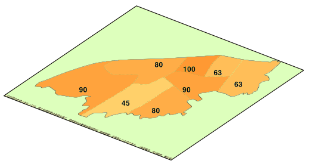
地図との組み合わせで、差をはっきりと比較させたい場合は、棒グラフがよいだろう。なお、同じ情報を、棒グラフで表わすと次のようになる（立体による地図グラフ）。
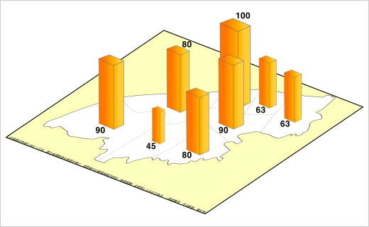
記号を利用する
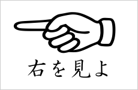
人間は、文字や数字よりも視覚的な記号に着目するものである。
たとえば、次のような貼紙を見たとしたら、多くの人が『左』を見るであろう。
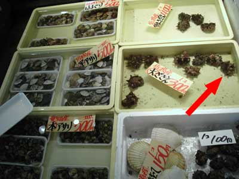
また、上の写真を見たときに、矢印（→）の部分に注目してしまう。
さらに、記号はわたしたちを特定の解釈に導く働きもする。
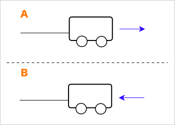
Ａでは台車がロープで何かを引いているように見えるが、Ｂでは台車がローブで何かに引かれているように見える。
また、下の例では、破線を引くことによって、そこを基準として物事を認識するようにもなることがわかる。
グラフに記号を追加する
記号の性質を利用することによって、強調したい部分に注意を引きつけたり、グラフを読む人の解釈に影響を与えることができる。
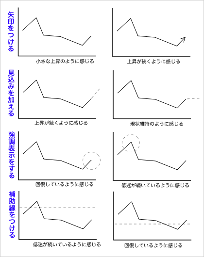
上の例では、矢印によって変化を誇張する、見込みのデータを追加することで印象を変える、強調表示よって注意をひく、補助線を引くことによって印象を変えるといった方法が用いられている。
その他のズルをする
その他にも、グラフを見る人の目をごまかす様々な方法がある。程々に活用するのがよいだろう。
グラフを立体的にする
グラフを３Ｄ（立体的）にすると、厳密な数値の読み取りが難しくなる。そのため、厳密に数値を読み取ってほしくないときには、グラフを立体的にするのがよい。
グラフの一部を省略する
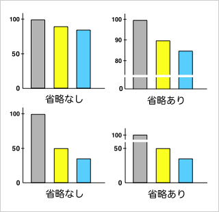
グラフの一部を省略することで、差や変化を実際よりも大きく見せたり、小さく見せたりすることができる。
グラフの一部を省略するときには、切れ目を入れるなどして省略した部分を明示しておく必要がある。
グラフの縦横比を変える
グラフの縦横の比率を変えることによって、差や変化を実際よりも大きく見せたり、小さく見せたりすることができる。
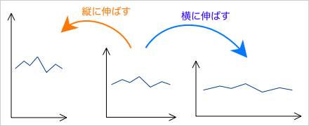
縦横の比率をあまり大きく変えると不自然になるので、そのときはイラストと組み合わせるなどの工夫が必要である。
また、グラフを対数軸にするという方法もある（対数グラフ）。もともとは、差の大きなものを同時に比較するときに用いる方法だが、たとえばＹ軸を対数軸にすることで、実際は大きな差を小さく見せることができる。
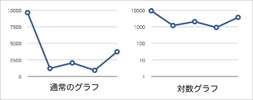
データを選定（剪定）する
全体のデータから、都合の良い部分だけを抜き出してグラフにしてしまうという方法である。

↑１年分のデータ(左)から３ヶ月ごとに取り出したデータをグラフにした例(右)
↓過去15年の(左)最近５年のデータだけをグラフにした例(右)
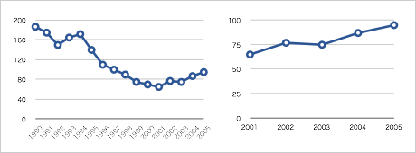
本来、かなり不公正な方法なので、実際に行なうときには注意が必要である。